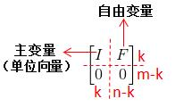

下面引入一个新的名词，叫零空间，不同于之前看过的列空间或行空间，零空间的组成成分来自于X而不是矩阵A本身。那么零空间是不是一个子空间？我们可以简易验证下，假如存在向量AX1=0,AX2=0，首先验证下加法是否成立，A(X1+X2)=0，成立。接下来验证数乘是否成立，AkX1=kAX1=0（其中k是常数），成立。其完全符合子空间的定义，所以零空间是一个子空间。
那么对于一个m*n的矩阵而言，其零空间是
 空间的子空间。为什么？因为矩阵的列数就是X的个数，而X的个数就是其向量空间的维数。
空间的子空间。为什么？因为矩阵的列数就是X的个数，而X的个数就是其向量空间的维数。
了解零空间的基本概念后，我们来看看如何算出其零空间，即如何求出X的值？
先给个例子，对于AX=0，我们先给出一个矩阵A：

说句题外话，这个矩阵的秩是多少？如果不清楚的话，建议先去了解下矩阵的秩。这个矩阵的秩是2。这个数最后要用到。
要求AX=0的解，我们可以学消元法？矩阵转换？里求AX=b用到的增广矩阵消元法来求解。但是由于本次方程右方结果是0，所以连增广矩阵都不需要了，直接用原矩阵进行消元即可，消元过程如下：
其中，其消元的结果记作矩阵U:
这里，AX=0的解跟UX=0是同样的解X。对于解
x1,x2,x3,x4分别对应着矩阵U的第一列，第二列，第三列，第四列的向量。由于矩阵U第三行第三列为0，且没有第四行数据，所以可以将x3,x4当作自由变量（可以自由取任意值），将x1,x2当作主变量（当自由变量确定下来后其也能跟着确定下来）。我们可以转化成方程式来更直观的了解下：
我们通过不断改变x3,x4的取值来得到无数个解：

那这些解集合起来就合成了矩阵A的零空间。那么该零空间是几维空间？（注意该问题跟一开始那个问题不一样，矩阵A的零空间肯定是4维向量空间的子空间，这里问的是子空间的维数）
我们观察刚刚求出的解，可以发现第三个解是前两个解的和，这代表三者已经线性相关，所以第三个解是可以舍去的。这时，我可以抛出一个结论，零空间的维数就是X自由变量的个数！
简单解释下，如果有n个自由变量，其最多能组成n个线性不相关的向量（比如有三个自由变量，其三个线性不相关的向量是(1,0,0)和(0,1,0)和(0,0,1)，再多一个向量都能由这三个向量线性合成）。而对于主变量来说，其都是随着自由变量变化而变化，所以得遵循自由变量的线性组合。
解释如下，假设有两个自由变量x3,x4，两个主变量x1,x2，这时x1,x2可以分别表示成x3,x4的线性组合。因为自由变量只有2个，所以线性无关的自由变量组合也只有2个：
这时有第三个解，其自由变量与之前2个解的自由变量线性相关，有：
故主变量是随着自由变量改变的，所以只要知道有几组线性无关的自由变量数，也就能知道有几组线性无关的解，二者等价。所以零空间的维数就是X自由变量的个数！
那么自由变量的个数又是由什么决定的呢？已知一开始举例的矩阵A其自由变量是2个，还记得这个两个是怎么确定的么？因为第三行第三个值为0，第四行不存在，所以把x3,x4定义为自由变量。那么自由变量的个数无疑是由矩阵的列秩决定的。对于一个m*n维的矩阵，如果其列秩为k，那么自由变量个数为n-k，即其零空间的维数为n-k。这里多讲一点，列空间的维数k加上零空间的维数n-k刚好为n，这个观点以后会扩展来讲。
我们再来看刚刚那个矩阵U，其可以进一步继续消元，把矩阵左边转换成单元矩阵的形式：
我们将最后那个矩阵称为矩阵R：
注意，RX=0与UX=0与AX=0的解都一样。
我们对比下刚刚输出的解可以发现：

是不是找到一点相似之处。我们进一步分析，对于任意一个m*n的矩阵A，其秩为k，可以消元和列序转换化成以下形式：

假定将X的上部分取为主变量Xp，下部分取为自由变量Xf（通过一定的转换顺序），可以得到AX=0的变式：
如果将自由变量Xf变成单位向量，那么该X就是矩阵A的零空间矩阵N，对于AN=0，有：
故对之前那个例子里，矩阵A的零空间矩阵是：
与之前计算出的方程组的解一致。而矩阵A的这个零空间是一个二维的平面空间。是的一个2维子空间。
最后再总结一次，零空间的大小与矩阵的秩和列空间维数有关，对于一个m*n的矩阵，其秩设为k，如果n-k=0，则零空间只有一个零向量，没有其他解。如果n-k>0，那么零空间的维数为n-k，即有n-k个线性无关的解。要想算出矩阵的零空间，首先消元至矩阵R（左边是单位矩阵的形式），然后就可以通过右边的剩余数值推出零空间的矩阵。至此，零空间问题就告一段落，下一章节，正交 = 垂直？